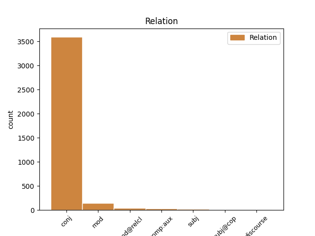
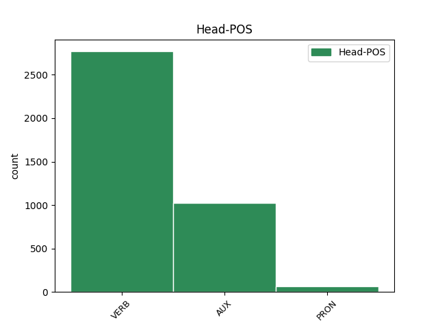
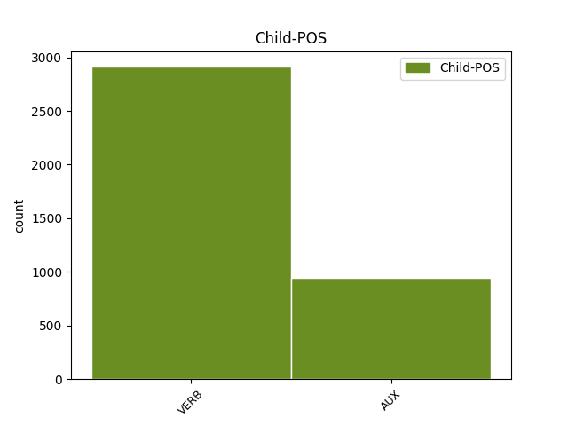

Distribution of features within this leaf



Agreement Rules sorted by frequency.
- When the dependent token is the conjunct(conj) of the head token, and the dependent token is VERB.
1 Hollandi _ _ _ _ 0 _ _ _
2 näide _ _ _ _ 0 _ _ _
3 1980. _ _ _ _ 0 _ _ _
4 aastatest _ _ _ _ 0 _ _ _
5 kirjeldab _ _ _ _ 0 _ _ _
6 olukorda _ _ _ _ 0 _ _ _
7 , _ _ _ _ 0 _ _ _
8 kus _ _ _ _ 0 _ _ _
9 palgatase _ _ _ _ 0 _ _ _
10 on olema AUX V Mood=Ind|Number=Sing|Person=3|Tense=Pres|VerbForm=Fin|Voice=Act 0 _ _ _
11 tõusnud _ _ _ _ 0 _ _ _
12 , _ _ _ _ 0 _ _ _
13 võrreldes _ _ _ _ 0 _ _ _
14 tootluse _ _ _ _ 0 _ _ _
15 dünaamikaga _ _ _ _ 0 _ _ _
16 juba _ _ _ _ 0 _ _ _
17 liiga _ _ _ _ 0 _ _ _
18 kõrgele _ _ _ _ 0 _ _ _
19 ning _ _ _ _ 0 _ _ _
20 seetõttu _ _ _ _ 0 _ _ _
21 osutus osutuma VERB V Mood=Ind|Number=Sing|Person=3|Tense=Past|VerbForm=Fin|Voice=Act 10 conj _ _
22 vajalikuks _ _ _ _ 0 _ _ _
23 kompleks _ _ _ _ 0 _ _ _
24 abinõusid _ _ _ _ 0 _ _ _
25 , _ _ _ _ 0 _ _ _
26 kus _ _ _ _ 0 _ _ _
27 palgakasvu _ _ _ _ 0 _ _ _
28 pidurdumine _ _ _ _ 0 _ _ _
29 oli _ _ _ _ 0 _ _ _
30 võrreldes _ _ _ _ 0 _ _ _
31 abiraha _ _ _ _ 0 _ _ _
32 maksmise _ _ _ _ 0 _ _ _
33 piiramise _ _ _ _ 0 _ _ _
34 ja _ _ _ _ 0 _ _ _
35 tööturu _ _ _ _ 0 _ _ _
36 liberaliseerimisega _ _ _ _ 0 _ _ _
37 üheks _ _ _ _ 0 _ _ _
38 paketi _ _ _ _ 0 _ _ _
39 elemendiks _ _ _ _ 0 _ _ _
40 . _ _ _ _ 0 _ _ _
1 vaeghõivatud _ _ _ _ 0 _ _ _
2 - _ _ _ _ 0 _ _ _
3 soovivad soovima VERB V Mood=Ind|Number=Plur|Person=3|Tense=Pres|VerbForm=Fin|Voice=Act 0 _ _ _
4 rohkem _ _ _ _ 0 _ _ _
5 töötada _ _ _ _ 0 _ _ _
6 ja _ _ _ _ 0 _ _ _
7 on olema AUX V Mood=Ind|Number=Plur|Person=3|Tense=Pres|VerbForm=Fin|Voice=Act 3 conj _ _
8 valmis _ _ _ _ 0 _ _ _
9 lisatööd _ _ _ _ 0 _ _ _
10 kohe _ _ _ _ 0 _ _ _
11 ( _ _ _ _ 0 _ _ _
12 kahe _ _ _ _ 0 _ _ _
13 nädala _ _ _ _ 0 _ _ _
14 jooksul _ _ _ _ 0 _ _ _
15 ) _ _ _ _ 0 _ _ _
16 vastu _ _ _ _ 0 _ _ _
17 võtma _ _ _ _ 0 _ _ _
1 Eriti _ _ _ _ 0 _ _ _
2 tugevat _ _ _ _ 0 _ _ _
3 positiivset _ _ _ _ 0 _ _ _
4 mõju _ _ _ _ 0 _ _ _
5 avaldavad _ _ _ _ 0 _ _ _
6 kõigil _ _ _ _ 0 _ _ _
7 aastatel _ _ _ _ 0 _ _ _
8 tööhõivele _ _ _ _ 0 _ _ _
9 need _ _ _ _ 0 _ _ _
10 ettevõtted _ _ _ _ 0 _ _ _
11 , _ _ _ _ 0 _ _ _
12 kes _ _ _ _ 0 _ _ _
13 on olema AUX V Mood=Ind|Number=Plur|Person=3|Tense=Pres|VerbForm=Fin|Voice=Act 0 _ _ _
14 investeerinud _ _ _ _ 0 _ _ _
15 nii _ _ _ _ 0 _ _ _
16 ehitistesse _ _ _ _ 0 _ _ _
17 kui _ _ _ _ 0 _ _ _
18 ka _ _ _ _ 0 _ _ _
19 masinatesse _ _ _ _ 0 _ _ _
20 , _ _ _ _ 0 _ _ _
21 mis _ _ _ _ 0 _ _ _
22 viitab viitama VERB V Mood=Ind|Number=Sing|Person=3|Tense=Pres|VerbForm=Fin|Voice=Act 13 mod _ _
23 otseselt _ _ _ _ 0 _ _ _
24 tootmise _ _ _ _ 0 _ _ _
25 laienemisele _ _ _ _ 0 _ _ _
26 . _ _ _ _ 0 _ _ _
1 Väliskapitalile _ _ _ _ 0 _ _ _
2 kuuluvate _ _ _ _ 0 _ _ _
3 ettevõtete _ _ _ _ 0 _ _ _
4 osakaal _ _ _ _ 0 _ _ _
5 on olema AUX V Mood=Ind|Number=Sing|Person=3|Tense=Pres|VerbForm=Fin|Voice=Act 0 _ _ _
6 samuti _ _ _ _ 0 _ _ _
7 suurenenud _ _ _ _ 0 _ _ _
8 , _ _ _ _ 0 _ _ _
9 mis _ _ _ _ 0 _ _ _
10 omakorda _ _ _ _ 0 _ _ _
11 on olema AUX V Mood=Ind|Number=Sing|Person=3|Tense=Pres|VerbForm=Fin|Voice=Act 5 mod _ _
12 mõjutanud _ _ _ _ 0 _ _ _
13 tööjõu _ _ _ _ 0 _ _ _
14 nõudmise _ _ _ _ 0 _ _ _
15 iseloomu _ _ _ _ 0 _ _ _
16 . _ _ _ _ 0 _ _ _
1 " _ _ _ _ 0 _ _ _
2 Ah _ _ _ _ 0 _ _ _
3 , _ _ _ _ 0 _ _ _
4 ära ära AUX V Mood=Imp|Number=Sing|Person=2|Polarity=Neg|Tense=Pres|VerbForm=Fin|Voice=Act 0 _ _ _
5 viitsi viitsima VERB V Connegative=Yes|Mood=Imp|Number=Sing|Person=2|Tense=Pres|VerbForm=Fin|Voice=Act 4 comp:aux _ SpaceAfter=No
6 ! _ _ _ _ 0 _ _ _
7 " _ _ _ _ 0 _ _ _
1 Nagu _ _ _ _ 0 _ _ _
2 alljärgnevast _ _ _ _ 0 _ _ _
3 tabelist _ _ _ _ 0 _ _ _
4 näha _ _ _ _ 0 _ _ _
5 , _ _ _ _ 0 _ _ _
6 on _ _ _ _ 0 _ _ _
7 nende tema PRON P Case=Gen|Number=Plur|Person=3|PronType=Prs 0 _ _ _
8 puhul _ _ _ _ 0 _ _ _
9 , _ _ _ _ 0 _ _ _
10 kes _ _ _ _ 0 _ _ _
11 kursustel _ _ _ _ 0 _ _ _
12 osalevad osalema VERB V Mood=Ind|Number=Plur|Person=3|Tense=Pres|VerbForm=Fin|Voice=Act 7 mod@relcl _ SpaceAfter=No
13 , _ _ _ _ 0 _ _ _
14 kõige _ _ _ _ 0 _ _ _
15 tõenäolisem _ _ _ _ 0 _ _ _
16 osavõtt _ _ _ _ 0 _ _ _
17 suhteliselt _ _ _ _ 0 _ _ _
18 lühiajalistest _ _ _ _ 0 _ _ _
19 - _ _ _ _ 0 _ _ _
20 kuni _ _ _ _ 0 _ _ _
21 ühekuulistest _ _ _ _ 0 _ _ _
22 kursustest _ _ _ _ 0 _ _ _
23 . _ _ _ _ 0 _ _ _
1 Kui _ _ _ _ 0 _ _ _
2 osaajaga _ _ _ _ 0 _ _ _
3 töö _ _ _ _ 0 _ _ _
4 ja _ _ _ _ 0 _ _ _
5 ajutine _ _ _ _ 0 _ _ _
6 töö _ _ _ _ 0 _ _ _
7 kaldub _ _ _ _ 0 _ _ _
8 olema _ _ _ _ 0 _ _ _
9 rohkem _ _ _ _ 0 _ _ _
10 nende tema PRON P Case=Gen|Number=Plur|Person=3|PronType=Prs 0 _ _ _
11 osaks _ _ _ _ 0 _ _ _
12 , _ _ _ _ 0 _ _ _
13 kes _ _ _ _ 0 _ _ _
14 on olema AUX V Mood=Ind|Number=Sing|Person=3|Tense=Pres|VerbForm=Fin|Voice=Act 10 mod@relcl _ _
15 tööturul _ _ _ _ 0 _ _ _
16 üldiselt _ _ _ _ 0 _ _ _
17 ebasoodsamal _ _ _ _ 0 _ _ _
18 positsioonil _ _ _ _ 0 _ _ _
19 ( _ _ _ _ 0 _ _ _
20 äärmuslikud _ _ _ _ 0 _ _ _
21 vanuserühmad _ _ _ _ 0 _ _ _
22 ja _ _ _ _ 0 _ _ _
23 naised _ _ _ _ 0 _ _ _
24 ) _ _ _ _ 0 _ _ _
25 , _ _ _ _ 0 _ _ _
26 siis _ _ _ _ 0 _ _ _
27 kõrvaltööde _ _ _ _ 0 _ _ _
28 dünaamika _ _ _ _ 0 _ _ _
29 näitab _ _ _ _ 0 _ _ _
30 kõrvaltööde _ _ _ _ 0 _ _ _
31 kandumist _ _ _ _ 0 _ _ _
32 kõrgematele _ _ _ _ 0 _ _ _
33 ametipositsioonidele _ _ _ _ 0 _ _ _
34 ja _ _ _ _ 0 _ _ _
35 kõrgema _ _ _ _ 0 _ _ _
36 haridustasemega _ _ _ _ 0 _ _ _
37 töötajate _ _ _ _ 0 _ _ _
38 kätte _ _ _ _ 0 _ _ _
39 . _ _ _ _ 0 _ _ _
1 Kaua _ _ _ _ 0 _ _ _
2 selliseks _ _ _ _ 0 _ _ _
3 operatsiooniks _ _ _ _ 0 _ _ _
4 aega _ _ _ _ 0 _ _ _
5 kulub kuluma VERB V Mood=Ind|Number=Sing|Person=3|Tense=Pres|VerbForm=Fin|Voice=Act 7 subj _ SpaceAfter=No
6 , _ _ _ _ 0 _ _ _
7 sõltub sõltuma VERB V Mood=Ind|Number=Sing|Person=3|Tense=Pres|VerbForm=Fin|Voice=Act 0 _ _ _
8 eeskätt _ _ _ _ 0 _ _ _
9 sellest _ _ _ _ 0 _ _ _
10 , _ _ _ _ 0 _ _ _
11 kas _ _ _ _ 0 _ _ _
12 kasutatakse _ _ _ _ 0 _ _ _
13 USB1.1 _ _ _ _ 0 _ _ _
14 või _ _ _ _ 0 _ _ _
15 USB _ _ _ _ 0 _ _ _
16 2.0 _ _ _ _ 0 _ _ _
17 liidest _ _ _ _ 0 _ _ _
18 . _ _ _ _ 0 _ _ _
1 Sageli _ _ _ _ 0 _ _ _
2 võivad _ _ _ _ 0 _ _ _
3 invasiiv-diagnostilisel _ _ _ _ 0 _ _ _
4 eesmärgil _ _ _ _ 0 _ _ _
5 teostatava _ _ _ _ 0 _ _ _
6 sõlmede _ _ _ _ 0 _ _ _
7 eemaldamise _ _ _ _ 0 _ _ _
8 järel _ _ _ _ 0 _ _ _
9 amüloidoosikolded _ _ _ _ 0 _ _ _
10 taastekkida _ _ _ _ 0 _ _ _
11 , _ _ _ _ 0 _ _ _
12 seejuures _ _ _ _ 0 _ _ _
13 on olema AUX V Mood=Ind|Number=Sing|Person=3|Tense=Pres|VerbForm=Fin|Voice=Act 0 _ _ _
14 teadmata _ _ _ _ 0 _ _ _
15 , _ _ _ _ 0 _ _ _
16 kas _ _ _ _ 0 _ _ _
17 põhjuseks _ _ _ _ 0 _ _ _
18 on olema AUX V Mood=Ind|Number=Sing|Person=3|Tense=Pres|VerbForm=Fin|Voice=Act 13 subj _ _
19 ebatäielik _ _ _ _ 0 _ _ _
20 resektsioon _ _ _ _ 0 _ _ _
21 või _ _ _ _ 0 _ _ _
22 areneb _ _ _ _ 0 _ _ _
23 haigus _ _ _ _ 0 _ _ _
24 ise _ _ _ _ 0 _ _ _
25 edasi _ _ _ _ 0 _ _ _
26 uute _ _ _ _ 0 _ _ _
27 sõlmede _ _ _ _ 0 _ _ _
28 moodustumisega _ _ _ _ 0 _ _ _
29 . _ _ _ _ 0 _ _ _
1 eeldame _ _ _ _ 0 _ _ _
2 , _ _ _ _ 0 _ _ _
3 et _ _ _ _ 0 _ _ _
4 allhanke _ _ _ _ 0 _ _ _
5 tegijad _ _ _ _ 0 _ _ _
6 saavad _ _ _ _ 0 _ _ _
7 varsti _ _ _ _ 0 _ _ _
8 hoo _ _ _ _ 0 _ _ _
9 sisse _ _ _ _ 0 _ _ _
10 ; _ _ _ _ 0 _ _ _
11 samas _ _ _ _ 0 _ _ _
12 on olema AUX V Mood=Ind|Number=Sing|Person=3|Tense=Pres|VerbForm=Fin|Voice=Act 0 _ _ _
13 kahtlane _ _ _ _ 0 _ _ _
14 , _ _ _ _ 0 _ _ _
15 kas _ _ _ _ 0 _ _ _
16 see _ _ _ _ 0 _ _ _
17 oluliselt _ _ _ _ 0 _ _ _
18 töökohtade _ _ _ _ 0 _ _ _
19 juurdekasvu _ _ _ _ 0 _ _ _
20 tekitab tekitama VERB V Mood=Ind|Number=Sing|Person=3|Tense=Pres|VerbForm=Fin|Voice=Act 12 subj@cop _ SpaceAfter=No
21 , _ _ _ _ 0 _ _ _
22 kuna _ _ _ _ 0 _ _ _
23 eriti _ _ _ _ 0 _ _ _
24 kõrgtehnoloogia _ _ _ _ 0 _ _ _
25 sektori _ _ _ _ 0 _ _ _
26 allhanke _ _ _ _ 0 _ _ _
27 osa _ _ _ _ 0 _ _ _
28 üldises _ _ _ _ 0 _ _ _
29 tööhõives _ _ _ _ 0 _ _ _
30 on _ _ _ _ 0 _ _ _
31 perifeerne _ _ _ _ 0 _ _ _
32 oletame _ _ _ _ 0 _ _ _
33 , _ _ _ _ 0 _ _ _
34 et _ _ _ _ 0 _ _ _
35 " _ _ _ _ 0 _ _ _
36 otseeksportijad _ _ _ _ 0 _ _ _
37 " _ _ _ _ 0 _ _ _
38 ( _ _ _ _ 0 _ _ _
39 mitte _ _ _ _ 0 _ _ _
40 -allhanke _ _ _ _ 0 _ _ _
41 tegijad _ _ _ _ 0 _ _ _
42 ) _ _ _ _ 0 _ _ _
43 jätkavad _ _ _ _ 0 _ _ _
44 enam-vähem _ _ _ _ 0 _ _ _
45 normaalselt _ _ _ _ 0 _ _ _
46 . _ _ _ _ 0 _ _ _
1 Kas _ _ _ _ 0 _ _ _
2 Tsee _ _ _ _ 0 _ _ _
3 võis võima AUX V Mood=Ind|Number=Sing|Person=3|Tense=Past|VerbForm=Fin|Voice=Act 11 subj@cop _ _
4 teada _ _ _ _ 0 _ _ _
5 midagi _ _ _ _ 0 _ _ _
6 kunagistest _ _ _ _ 0 _ _ _
7 Hiina _ _ _ _ 0 _ _ _
8 palee _ _ _ _ 0 _ _ _
9 ilukanadest _ _ _ _ 0 _ _ _
10 , _ _ _ _ 0 _ _ _
11 on olema AUX V Mood=Ind|Number=Sing|Person=3|Tense=Pres|VerbForm=Fin|Voice=Act 0 _ _ _
12 üpris _ _ _ _ 0 _ _ _
13 kahtlane _ _ _ _ 0 _ _ _
14 , _ _ _ _ 0 _ _ _
15 aga _ _ _ _ 0 _ _ _
16 nõnda _ _ _ _ 0 _ _ _
17 kuulis _ _ _ _ 0 _ _ _
18 tüdruk _ _ _ _ 0 _ _ _
19 teda _ _ _ _ 0 _ _ _
20 kõnelevat _ _ _ _ 0 _ _ _
21 , _ _ _ _ 0 _ _ _
22 kuigi _ _ _ _ 0 _ _ _
23 mõnele _ _ _ _ 0 _ _ _
24 kehvemale _ _ _ _ 0 _ _ _
25 kuulajale _ _ _ _ 0 _ _ _
26 ei _ _ _ _ 0 _ _ _
27 kostnud _ _ _ _ 0 _ _ _
28 muud _ _ _ _ 0 _ _ _
29 kui _ _ _ _ 0 _ _ _
30 mõni _ _ _ _ 0 _ _ _
31 üksik _ _ _ _ 0 _ _ _
32 " _ _ _ _ 0 _ _ _
33 kok _ _ _ _ 0 _ _ _
34 " _ _ _ _ 0 _ _ _
35 . _ _ _ _ 0 _ _ _
1 Videolõigud _ _ _ _ 0 _ _ _
2 olid _ _ _ _ 0 _ _ _
3 salvestatud _ _ _ _ 0 _ _ _
4 kohtades _ _ _ _ 0 _ _ _
5 , _ _ _ _ 0 _ _ _
6 kus _ _ _ _ 0 _ _ _
7 tõesti _ _ _ _ 0 _ _ _
8 midagi _ _ _ _ 0 _ _ _
9 erilist _ _ _ _ 0 _ _ _
10 võib võima AUX V Mood=Ind|Number=Sing|Person=3|Tense=Pres|VerbForm=Fin|Voice=Act 0 _ _ _
11 ja _ _ _ _ 0 _ _ _
12 saab saama AUX V Mood=Ind|Number=Sing|Person=3|Tense=Pres|VerbForm=Fin|Voice=Act 10 comp:aux _ _
13 näha _ _ _ _ 0 _ _ _
14 . _ _ _ _ 0 _ _ _
Disagree Examples:
1 " _ _ _ _ 0 _ _ _
2 Sel _ _ _ _ 0 _ _ _
3 päeval _ _ _ _ 0 _ _ _
4 tööl _ _ _ _ 0 _ _ _
5 olnud _ _ _ _ 0 _ _ _
6 korrapidaja _ _ _ _ 0 _ _ _
7 sõitis sõitma VERB V Mood=Ind|Number=Sing|Person=3|Tense=Past|VerbForm=Fin|Voice=Act 0 _ _ _
8 ära _ _ _ _ 0 _ _ _
9 ja _ _ _ _ 0 _ _ _
10 on _ _ _ _ 0 _ _ _
11 linnas _ _ _ _ 0 _ _ _
12 tagasi _ _ _ _ 0 _ _ _
13 neljapäeval _ _ _ _ 0 _ _ _
14 , _ _ _ _ 0 _ _ _
15 siis _ _ _ _ 0 _ _ _
16 kuulame kuulama VERB V Mood=Ind|Number=Plur|Person=1|Tense=Pres|VerbForm=Fin|Voice=Act 7 conj _ _
17 ta _ _ _ _ 0 _ _ _
18 üle _ _ _ _ 0 _ _ _
19 , _ _ _ _ 0 _ _ _
20 " _ _ _ _ 0 _ _ _
21 lausus _ _ _ _ 0 _ _ _
22 Solovjov _ _ _ _ 0 _ _ _
23 . _ _ _ _ 0 _ _ _
1 " _ _ _ _ 0 _ _ _
2 Ühel _ _ _ _ 0 _ _ _
3 päeval _ _ _ _ 0 _ _ _
4 leidsin leidma VERB V Mood=Ind|Number=Sing|Person=1|Tense=Past|VerbForm=Fin|Voice=Act 0 _ _ _
5 oma _ _ _ _ 0 _ _ _
6 toast _ _ _ _ 0 _ _ _
7 külmkapi _ _ _ _ 0 _ _ _
8 , _ _ _ _ 0 _ _ _
9 see _ _ _ _ 0 _ _ _
10 oli olema AUX V Mood=Ind|Number=Sing|Person=3|Tense=Past|VerbForm=Fin|Voice=Act 4 conj _ _
11 väga _ _ _ _ 0 _ _ _
12 meeldiv _ _ _ _ 0 _ _ _
13 üllatus _ _ _ _ 0 _ _ _
14 , _ _ _ _ 0 _ _ _
15 " _ _ _ _ 0 _ _ _
16 ütles _ _ _ _ 0 _ _ _
17 Pärnamäe _ _ _ _ 0 _ _ _
18 . _ _ _ _ 0 _ _ _
1 Olen olema AUX V Mood=Ind|Number=Sing|Person=1|Tense=Pres|VerbForm=Fin|Voice=Act 0 _ _ _
2 tellinud _ _ _ _ 0 _ _ _
3 Teie _ _ _ _ 0 _ _ _
4 lehte _ _ _ _ 0 _ _ _
5 6 _ _ _ _ 0 _ _ _
6 aastat _ _ _ _ 0 _ _ _
7 , _ _ _ _ 0 _ _ _
8 aga _ _ _ _ 0 _ _ _
9 nüüd _ _ _ _ 0 _ _ _
10 jääb jääma VERB V Mood=Ind|Number=Sing|Person=3|Tense=Pres|VerbForm=Fin|Voice=Act 1 conj _ _
11 1999 _ _ _ _ 0 _ _ _
12 vist _ _ _ _ 0 _ _ _
13 viimaseks _ _ _ _ 0 _ _ _
14 , _ _ _ _ 0 _ _ _
15 sest _ _ _ _ 0 _ _ _
16 selline _ _ _ _ 0 _ _ _
17 sopaloopimine _ _ _ _ 0 _ _ _
18 on _ _ _ _ 0 _ _ _
19 lihtkodanlikule _ _ _ _ 0 _ _ _
20 arusaamatu _ _ _ _ 0 _ _ _
21 . _ _ _ _ 0 _ _ _
1 Eesti _ _ _ _ 0 _ _ _
2 on _ _ _ _ 0 _ _ _
3 juba _ _ _ _ 0 _ _ _
4 ammu _ _ _ _ 0 _ _ _
5 üleerutatud _ _ _ _ 0 _ _ _
6 seisundis _ _ _ _ 0 _ _ _
7 : _ _ _ _ 0 _ _ _
8 lugege lugema VERB V Mood=Imp|Number=Plur|Person=2|Tense=Pres|VerbForm=Fin|Voice=Act 0 _ _ _
9 päevauudiseid _ _ _ _ 0 _ _ _
10 ja _ _ _ _ 0 _ _ _
11 teil _ _ _ _ 0 _ _ _
12 tuleb tulema VERB V Mood=Ind|Number=Sing|Person=3|Tense=Pres|VerbForm=Fin|Voice=Act 8 conj _ _
13 tahtmine _ _ _ _ 0 _ _ _
14 peast _ _ _ _ 0 _ _ _
15 kinni _ _ _ _ 0 _ _ _
16 haarata _ _ _ _ 0 _ _ _
17 ning _ _ _ _ 0 _ _ _
18 küsida _ _ _ _ 0 _ _ _
19 : _ _ _ _ 0 _ _ _
20 mis _ _ _ _ 0 _ _ _
21 toimub _ _ _ _ 0 _ _ _
22 ? _ _ _ _ 0 _ _ _
1 Ameeriklasest _ _ _ _ 0 _ _ _
2 direktor _ _ _ _ 0 _ _ _
3 reageeris _ _ _ _ 0 _ _ _
4 rahulikult _ _ _ _ 0 _ _ _
5 : _ _ _ _ 0 _ _ _
6 " _ _ _ _ 0 _ _ _
7 Me _ _ _ _ 0 _ _ _
8 võime võima AUX V Mood=Ind|Number=Plur|Person=1|Tense=Pres|VerbForm=Fin|Voice=Act 0 _ _ _
9 oma _ _ _ _ 0 _ _ _
10 laboris _ _ _ _ 0 _ _ _
11 valmistada _ _ _ _ 0 _ _ _
12 igasugust _ _ _ _ 0 _ _ _
13 šokolaadi _ _ _ _ 0 _ _ _
14 , _ _ _ _ 0 _ _ _
15 kuid _ _ _ _ 0 _ _ _
16 vastavalt _ _ _ _ 0 _ _ _
17 uuringutele _ _ _ _ 0 _ _ _
18 meeldib meeldima VERB V Mood=Ind|Number=Sing|Person=3|Tense=Pres|VerbForm=Fin|Voice=Act 8 conj _ _
19 meie _ _ _ _ 0 _ _ _
20 tarbijale _ _ _ _ 0 _ _ _
21 magus _ _ _ _ 0 _ _ _
22 , _ _ _ _ 0 _ _ _
23 tugeva _ _ _ _ 0 _ _ _
24 kakaomaitsega _ _ _ _ 0 _ _ _
25 šokolaad _ _ _ _ 0 _ _ _
26 . _ _ _ _ 0 _ _ _